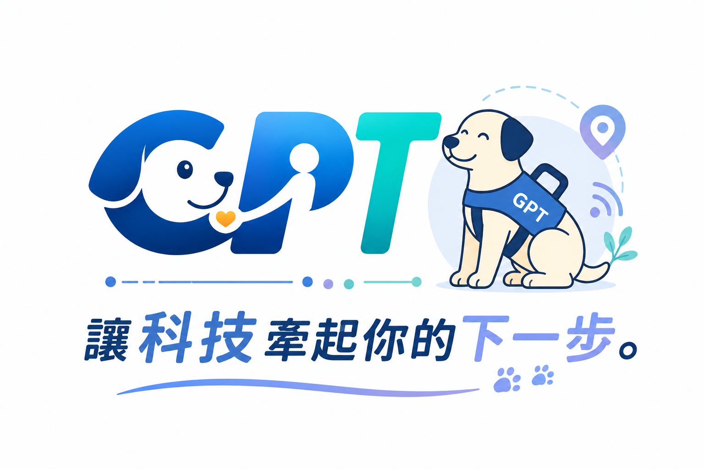
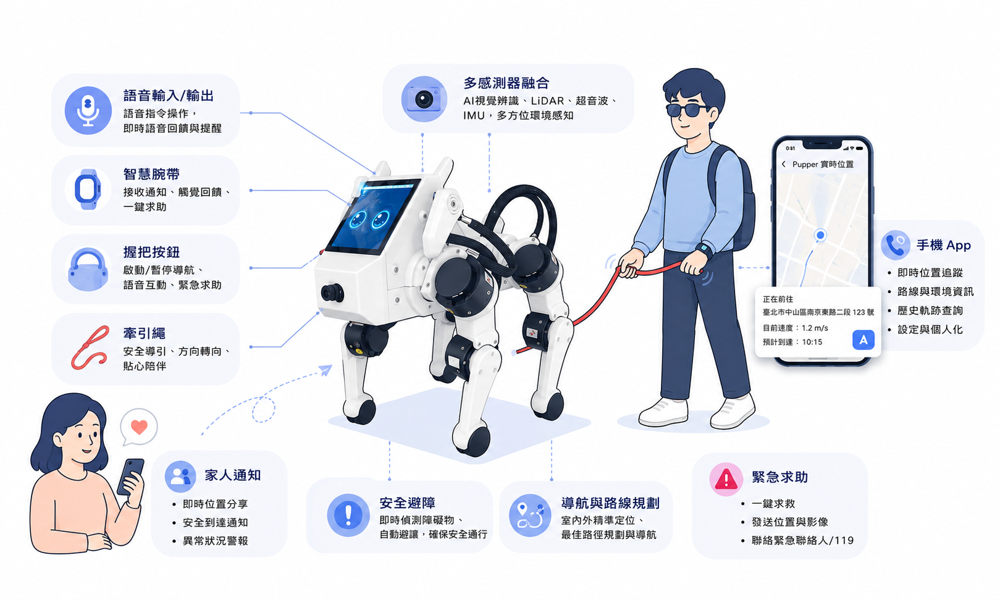

DEPARTURE · SENSE
我要去市立醫院
GPT 正在建立小晴今天的完整旅程。
CURRENT LOCATION公車站
AI ACTION PIPELINE每個行動都經過完整安全決策

AI GUIDE ROBOT · PUPPER V3
以 Pupper v3 為 Physical AI Agent，將視覺感知、Guardian AI 與實體牽引整合成一套智慧導盲與生活陪伴系統。

GUIDE SYSTEM · PRODUCT ECOSYSTEM